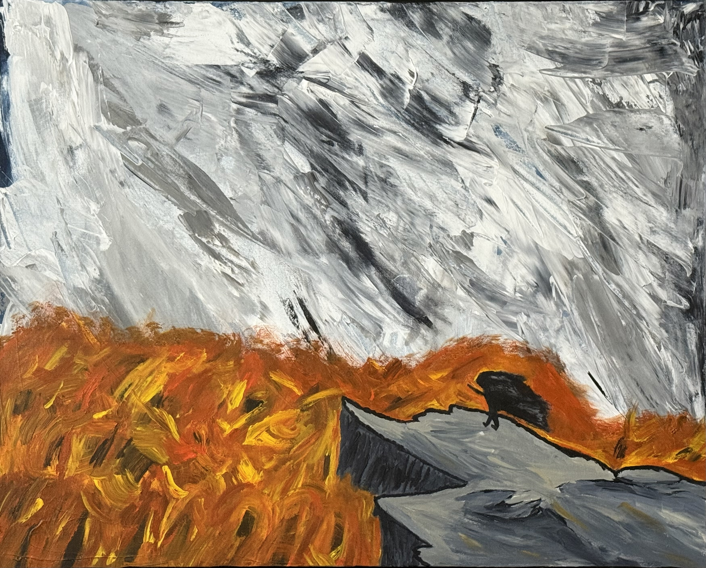
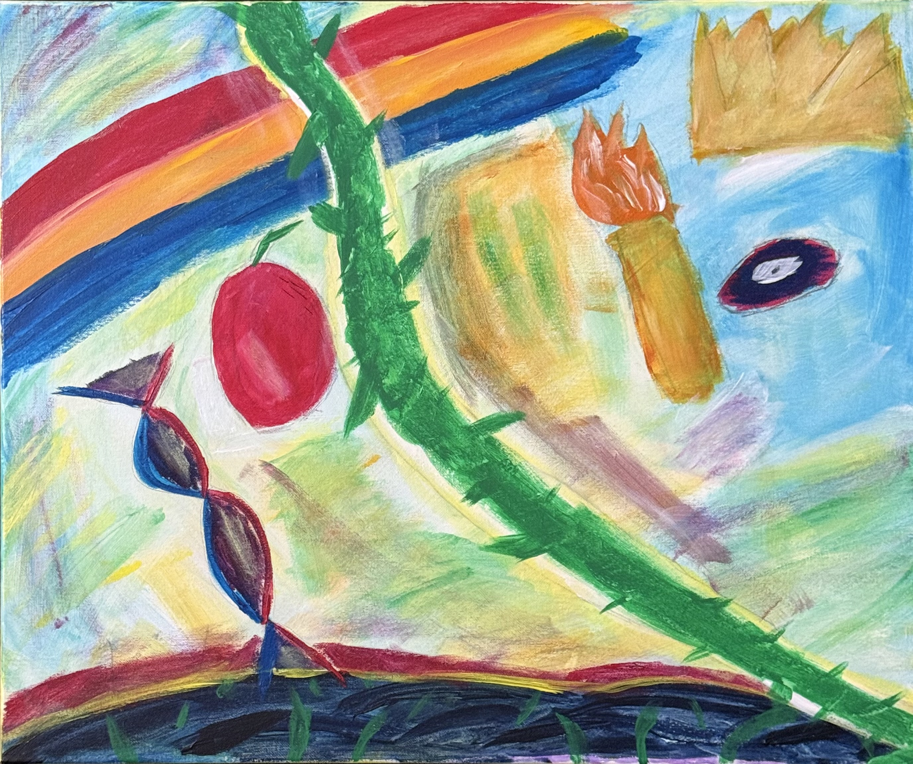
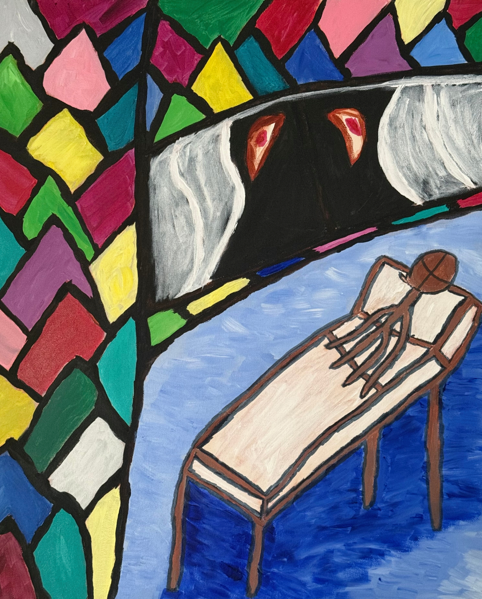
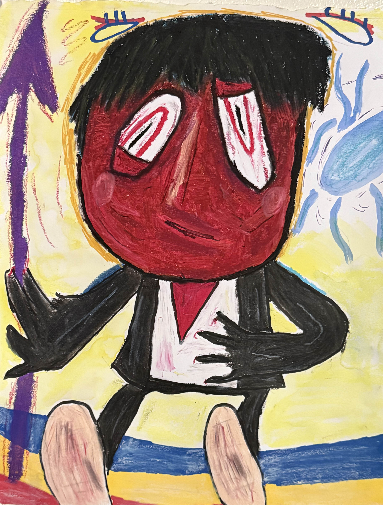

When I Died I Thought They Wouldn't Miss Me
Acrylic; Canvas 30x40in

Cliffside Storm
Acrylic; Canvas 24x36in

Beanstalk
Acrylic, Marker, Pencil; Canvas 20x24in
My Artwork

Collections
I imagine my work existing within a world of its own, and collections bring that world to reality. My collections are groups of paintings, drawings, or other works of art that culminate in a semi-narrative visual experience. Each collection features a unique title, theme, and visual language.
Preview My Forthcoming Collection: Ceremony

Paintings
Painting is my primary means of expression. I prefer working in acrylic paint but do not hesitate to experiment with water color, oil, or other dry mediums in tandem with paint. I considered myself more of a painter than anything, with over 100 original works.
See More Paintings

Drawings
If paintings are my primary, refined language, then drawings are the place where I experiment most freely. I work with pencil, charcoal, oil pastels, markers, or ocassionaly even paint to create illustrations. Most drawings are usually done on paper.
Check Out More Drawings
About Me
Alex Panov (AP) is an artist from Virginia who specializes in painting. Balancing expressionistic figures and environments with medieval style iconography, he attempts to gain a better understanding of humanity; specifically, how people make meaning through symbols, colors, and expressions. We were born into a meaningless world, so we must find the meaning ourselves.
Collections
I imagine my work existing within a world of its own, and collections bring that world to reality. My collections are groups of paintings, drawings, or other works of art that culminate in a semi-narrative visual experience. Each collection features a unique title, theme, and visual language.
Preview My Forthcoming Collection: Ceremony
Paintings
Painting is my primary means of expression. I prefer working in acrylic paint but do not hesitate to experiment with water color, oil, or other dry mediums in tandem with paint. I considered myself more of a painter than anything, with over 100 original works.
See More Paintings
Drawings
If paintings are my primary, refined language, then drawings are the place where I experiment most freely. I work with pencil, charcoal, oil pastels, markers, or ocassionaly even paint to create illustrations. Most drawings are usually done on paper.
Check Out More DrawingsAbout Me
Alex Panov (AP) is an artist from Virginia who specializes in painting. Balancing expressionistic figures and environments with medieval style iconography, he attempts to gain a better understanding of humanity; specifically, how people make meaning through symbols, colors, and expressions. We were born into a meaningless world, so we must find the meaning ourselves.